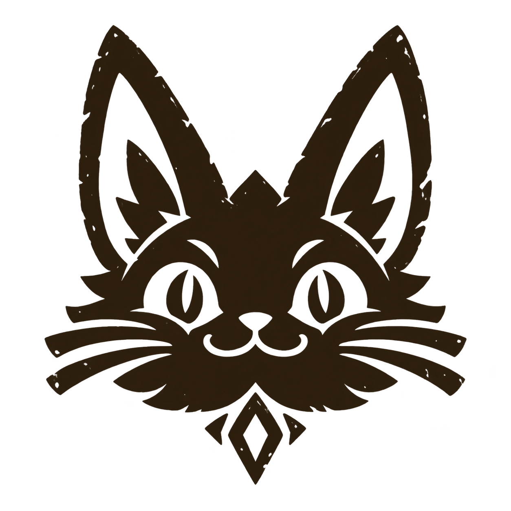
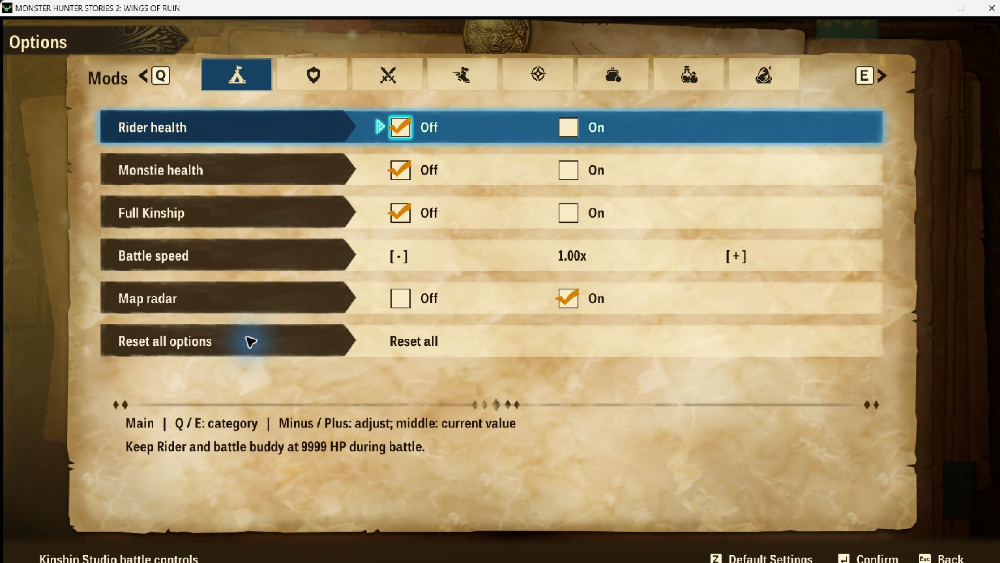
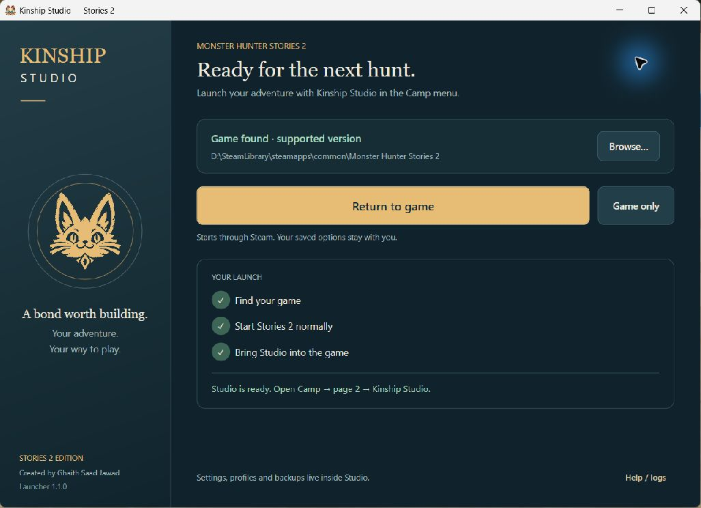

Battle your way
Rider and Monstie health, Kinship, hearts, attack, incoming damage, battle speed and turn controls.

Kinship StudioDownload 1.1.0For Monster Hunter Stories 2: Wings of Ruin
A little more adventure.
A little less grind.
Kinship Studio feels at home in your Camp menu. Tune battles, explore comfortably, and make each reward count—all without leaving the game.
Free · Windows x64 · Steam build 1.6.1
Installer 1.1.0 · No separate .NET installation

Made for the way
you like to play.
Eight compact tabs. The game’s own navigation, fonts and controls. A matching Camp icon. Your settings, ready for the next hunt.
Start with everything at its normal value, then change only what makes your adventure more enjoyable.
From a gentler battle to a more rewarding gathering trip, keep the controls you need close by.
Rider and Monstie health, Kinship, hearts, attack, incoming damage, battle speed and turn controls.
Walking, riding, flying, swimming and egg-carrying speeds. Radar, gathering range, faster manual gathering and retreat controls.
Independent gathering and battle loot, ordinary chest items, Battle EXP and earned Zenny multipliers.
Egg-quality and den-rarity presets, plus protection from empty solo egg pulls. Rainbow glow does not guarantee a Rainbow Gene.
The launcher finds your Steam installation, starts Stories 2 normally, and waits until it can load Studio and the custom Camp icon.
The launcher can also connect to a game that is already running.

Simple to use, with clear limits.
The Windows x64 Steam build of Monster Hunter Stories 2, tested against version 1.6.1. The launcher checks the exact executable before loading. An unsupported build is refused. This is for single-player use.
This is the new native Camp-menu Studio, with its own launcher. The older desktop trainer and Egg & Gene editor remain available separately. Don’t run both together. Read the desktop trainer guide.
Use Restore last settings to bring your choices back at startup. Profiles and save-backup controls live under Inventory. Save restoration waits until the game exits, verifies the backup and creates a safety backup first. Settings, profiles and backups remain after uninstalling.
No. The setup contains the launcher and native modules, with the required runtime. Steam and a supported installed copy of the game are required.
They affect new generation. Travel away and regenerate the area for new dens; eggs already generated or carried are not rewritten. Story, region and unlock restrictions still apply.
No. Material preservation keeps ingredients when crafting or upgrading, but you still need the required materials and still pay Zenny. Item preservation covers ordinary battle items, not all Field/Camp items or nutriments.
Close the game and launcher, then run the new setup to update or repair. Use Windows Installed apps or run setup again to uninstall. The launcher leaves your saves and personal settings in place. Separate archive modifications from the old trainer are managed by that older tool.
This release is unsigned. Download only from this project’s GitHub Releases and compare the supplied SHA-256 checksum if needed. If Windows blocks it, review the file and warning before deciding how to proceed.
Set your pace. Keep the adventure.
Download for WindowsRelease notes & checksums